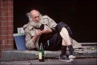

Antropología filosófica
 De: La Frikipedia, la enciclopedia extremadamente seria.
De: La Frikipedia, la enciclopedia extremadamente seria.
La antropología filosófica (del arábigo extendido ٿځٻٮٽټٺ, que significa Qué hace el hombre por la noche) es aquella ciencia en la que se estudia al hombre en su naturaleza misma. Toma como objeto de estudio el actuar humano en cada peculiar circunstancia de su vida, día a día, los 8 días de la semana.
Argumento
Uso de la antropología filosófica aplicado a la vida real
La antropología filosófica, como argumento de estudio para cualquier poeta emergente, propone al hombre como supremo rey de todas las bestias, pero no tomando en cuenta sus quehaceres físicos sino sus emociones y pensamientos. De tal modo que todos los poetas son unos alfeñiques sabiondos que adoran al mismo c4b&0n
Puede decirse que el conocimiento del hombre sobre el hombre es la base fundamental de todos los estudios filosóficos, así que la antropología filosófica es el pretexto perfecto para beber ideas con 7 grados de alcohol, con los amigos en antropololugares para ser antropolólogos.
Antropololugares
Es aquel lugar de esparcimiento donde poetas jóvenes de todas las edades (excepto de 4° "a" porque los del "b" son los mejores) salen a conversar sobre tópicos arrebatadamente filosóficos. Estos antropololugares suelen estar muy poco iluminados, llenos de humo y destellos repetitivos de luces blancas y verdes. Debe haber un ruido excesivo. Expertos antropolólogos mencionan que mientras menos se pueda entender, ver y escuchar dentro del antropololugar, mayor es su concentración filosófica. Las drogas son indispensables.
Los mejores antropololugares no abren sus puertas sino hasta que la gente se encuentra afuera haciendo una interminable fila mientras que un tipo, con cara de poquísimos amigos, sostiene una cadena; esta cadena sirve para permitir o negar la entrada al antropololugar. Hace falta llegar muy elegantemente disfrazados de tolichones (regionalismo brasileño de la palabra latina "chulo, prestador de favorcitos, mujeriego") y buchonas (regionalismo mexicano de la palabra "mujer exagerada que ha intimado con diversos usuarios") para que te dejen entrar, ya que la apariencia se toma en cuenta enormemente dentro de los antropololugares.
Servicios
Los servicios que se prestan dentro de los antropololugares son diversos. Están por ejemplo los antropolólogos que sirven ideas en vasos con mucho hielo y colores fosforescentes. A estos personajes los llamaremos "Profesores de Teatro". Luego, hay un sujeto seriamente estresado que se encarga de llevar las "ideas en las roquitas" hasta los asientos de los asistentes, a este individuo lo llamaremos "Estudiante de Humanidades".
Justo en el momento más álgido de la noche todos los asistentes se reúnen en el centro del antropololugar, que generalmente se encuentra ambientado con azulejos de colores destellantes, humo artificial y bocinas que triplican el ruido que se escucha en todo el lugar; para demostrar sus enceres filosóficos. Ya que un antropolólogo es un ser en extremo tímido, suele integrarse al ritual mencionado en grupos de hasta 5 personas. Es muy extraño que los individuos se acerquen solos, y a quien lo hace se le cataloga como "malacopa" (tema que abordaremos en lo sucesivo).
Vías filosóficas (rituales)
Existen tres vías filosóficas:
- Movimiento positivista y analítico
- Centrándose en la ciencia de la lógica, el movimiento positivista y analítico pretende conectar al individuo con su estado físico más alto. Analizando sus circunstancias y criticando sus propias emociones, el hombre (las mujeres no porque son robots y los robots no pueden llorar) alcanza su máxima virtud por medio de esta vía cuando se acerca al centro del antropololugar y demuestra sus eruditos conocimientos con una acción que denominaremos "Baile". Para ello, claro, hay diversos tipos de baile, entre ellos:
- El mene-ha-ito: el individuo mueve su cadera de forma elíptica alzando su miembro reproductor.
- La bamba: el individuo debe filosofar animadamente, ya que se necesita una poca de gracia.
- Bachata: el individuo talla su miembro pélvico a otro miembro de la misma zona creando un torbellino.
- Cumbia: el individuo debe agitar furiosamente sus glúteos hasta quedar inconsciente.
- De tal manera que el movimiento positivista y analítico se resume en las técnicas para ser el mejor filósofo bailarín.
- Esta vía filosófica parte de la filosofía social, política e histórica. Tiene como principal objetivo replantear las técnicas de meditación de cada sector social y político a través de la historia. Es decir, se trata de presumir el dinero que cada individuo trae consigo. Siempre es mejor visto aquel antropolólogo cuya cartera está tan rebosante de billetes que aquel con buen corazón.
- Vitalismo, irracionalismo y el existencialismo
- Fundamentada en la ética y estética, esta vía filosófica es precursora de un tipo de antropolólogo muy especial que se hace llamar "metro-sexual". Los hombres que aplican esta vía son siempre los mejores vestidos así como los menos héteros del lugar. El Vitalismo refiere a la fuerza de voluntad que tiene el individuo, es decir, qué tanto aguanta beber cerveza. El irracionalismo responde a la actitud filosófica de utilizar la frase "Es relativo" en cualquier conversación. Por último, el existencialismo objeta la verdad filosófica de la existencia como ser y estar en todas partes y al mismo tiempo sin importar tiempo, distancia ni qué tan caliente esté el lugar.
Antropolólogos
Como bien se intuye, los antropololugares no tendrían razón de existir sin los antropolólogos, seres infrahumanos que han ascendido del plano terrenal para convertirse en sabios verdaderos. Los antropolólogos, por lo regular, cuentan con la capacidad nata de tener la razón. Nadie puede objetarles ni con el pensamiento ninguna de sus ideas, así pues tenemos que, por lógica, el antropolólogo es la base teórica de todas las filosofías del mundo y nadie puede decir que no porque no.
Tipos de antropolólogos
 El éxito del
maestro de teatro es innegable
- Divertido y aunque excéntrico, este es el tipo de antropolólogo que por lo regular escoge, aunque tú no quieras, el curso que tomará tu vida. Como es sabido, la tarea principal del antropolólogo es hacer tambalear tus ideas y convicciones; deformarlas de tal manera que termines escogiendo vivir de cierta forma. Así es como el antropolólogo Maestro de Teatro toma riendas del destino de sus alumnos, convenciéndolos de "ser lo que quieran ser", por patraña que suene el asunto.
Los
poetas emergentes emergen, no importa el caso
- El poeta emergente no es aquel sino quién. Es el nacer y existir pero no ni tampoco. Es la filosofía en su versión amateur de las cosas. Es dueño de las estrellas, de los soles, de Plutón. Absorto en su conocimiento, no necesita estudiar, le basta con leer un libro y así almacenar la verdad del universo mismo. Son enemigos jurados de Mario Benedetti y no necesitan haberlo leído para ello (prueba irrefutable de su omnipotencia). Su bebida favorita es la aquí.
- Para describir mejor este tipo de antropolólogo, hace falta estar muy ebrio. El alcohol debe suplantar casi en un 66% la sangre en las venas. En su mayoría tienen problemas visuales y maritales. El estilo de vida de estos filósofos es muy parecido al de cualquier mujer post-menopáusica que vive sola con sus gatos. Son calvos y componen canciones a las que gustan llamar "sonetos".
- Aquí un ejemplo de su filosofar:

|
- Te vengo sopensando en todos los días que me debes
- tal cual si, pudiera ver porque uso anteojos.
- Sólo quiero, resumiendo, que al principio no existía nada
- que hoy compramos en ti la cosa a donde se viene uno.
- Si te cuento que esta unión de dulces y sal me enfermó
- y otras cosillas parecidillas que el sentido no vale la pena indagar.
- Es que me deleito con imaginarme fuera de la prisión,
- con mi suéter preferido y no quisiera un día notar
- que este bordado se descosió jamás.
- Y a mí que vengo a derramar para tu ungüento,
- muchas más Lociones de las que me hubieran salido ayer.
- Que despido al sol poniéndote cuando te contemplo
- el siempre de tus hoyuelos y por fin comienzo a sentir
- que estoy dejando de cantar que vengo,
- que me detienes la eyaculación,
- que atraen mi vida tus pechos tirados
- a donde siempre apuntó mi "amante embarcación".
|

|
| Entre parados y bebidas, de Fer el delgadillo
|
- Como todo en la vida, existe el lado negativo de la antropología filosófica, y es aquel antropolólogo de sobrenombre malacopa. Embarga de silencio a cualquiera que trate de explicar su razón de ser. El caso con este tipo de antropolólogos es que ninguno es igual que otro, es decir, que ninguno es igual a otro, ni otro a otro o que nadie se parece porque no son del mismo padre aunque su madre sea igual.
- El modo en que operan estos antropolólogos es en realidad simple. Cuando el antropolólogo bebe demasiadas ideas en las rocas, se encuentra desbordando sabiduría, y así mismo es como este individuo demuestra ante todos el desborde de imaginación y honda capacidad para confundir a los demás. Caerse, gritar, tocar un par de glúteos, pero sobre todo derramar las ideas de los demás, significa estar de malacopa. Nadie está cómodo cuando un malacopa aparece y lo más sórdido horrendo del asunto es que cualquier tipo de antropolólogo está a un paso de convertirse en un malacopa.
Autor(es):
- Genericool
- Times New Roman
Frikipedia 2005-2016, Licencia
GFDL 1.2 - Extraído por FrikiLeaks